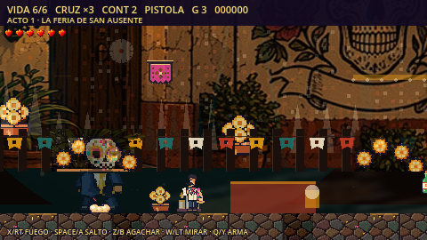

Nadie Mira Arriba · Godot 4.7.2
Look toward El Cielo.
Four acts, seven weapons, and a night that will not end. Join Cruz in an original arcade world built from lotee art.
Android debug / sideload build, not a Play Store release. Android only; keyboard or compatible gamepad required. No touch controls in this build.